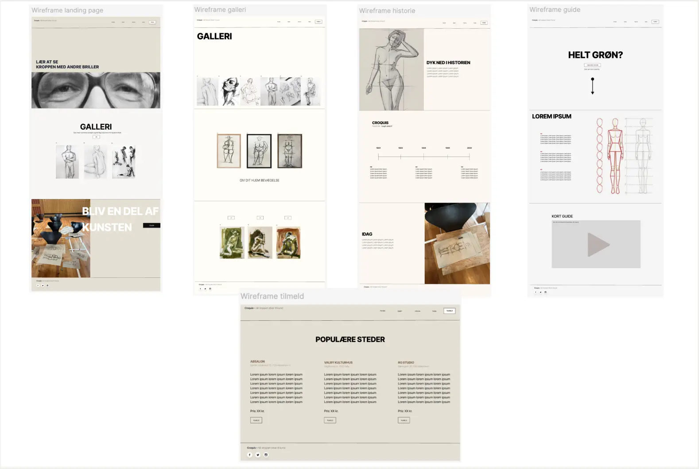
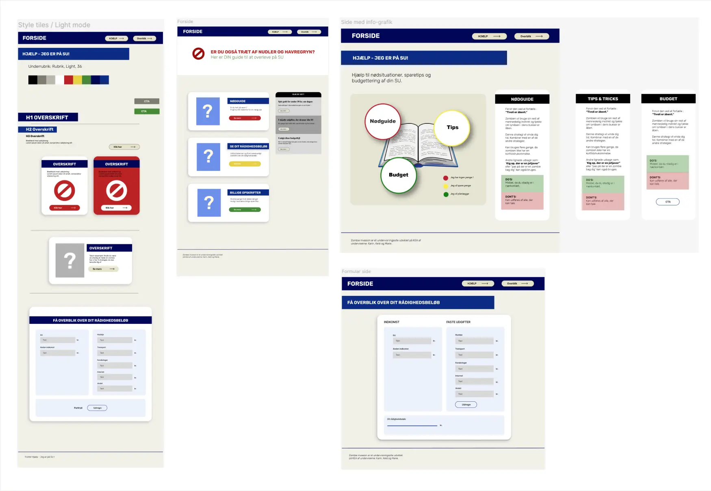
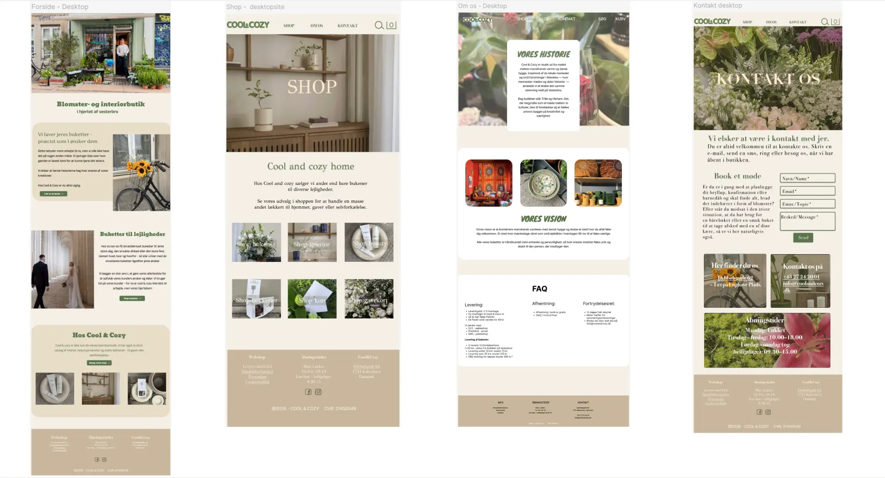

Mine projekter
Få et overblik over mine projekter fra 1. semester
På første semester har vi beskæftiget os med 6 forskellige temaer, der bredt har taget os igennem en grundlæggende forståelse og læring af grundlæggende web, UX/UI, brugergrænsefladeudvikling, grundlæggende indhold samt denne portfolio
som eksamensopgave.
Jeg har valgt at tage udgangspunkt i de projekter vi har lavet gennem alle 6 temaer.
Bliv klogere på hvert projekt her:
Mobil- og website
Tema 2 - Grundlæggende web
Løsning:
I dette projekt udviklede jeg et website efter mobile-first princippet og videreudviklede det herefter til at være responsivt på desktop også. Websitet består af fem html-sider: Forside, Min computer, Operativsystemer, Komponenter og Galleri.
Proces:
Jeg startede med at danne mig et overblik over det udleverede materiale, som i dette tilfælde omfattede wireframes, layoutdiagrammer, tekst, billeder og krav til b.la typografi og farver. Herefter oprettede jeg grundstrukturen på alle fem
HTML-sider med de nødvendige semantiske elementer såsom header, main og footer, og indsatte indhold samt navigation.
Med udgangspunkt i mobilversionen tilpassede jeg derefter layoutet til desktop ved hjælp af Grid, Flexbox og
Media Queries. Herefter opdelte jeg CSS i en generel.css og en layout.css for bedre overblik. Her fik jeg tilføjet struktur og styling.
Til sidst blev både HTML og CSS valideret og eventuelle fejl blev rettet. Afslutningsvis
blev siden uploaded til GitHub.
Læring:
Projektet gav mig en grundlæggende forståelse for HTML og CSS samt erfaring med Grid, Flexbox og responsivt design. Jeg lærte at arbejde med designprincipper i praksis og hvordan man komprimerer billeder til et format med mindre
filstørrelse såsom WebP, og vigtigheden af at gøre det.
Jeg lærte også om mappestruktur, og vigtigheden i, at have styr på den.
Dette fremgår også af min feedback, da man ikke kunne se mine billeder, fordi de ikke lå i
en ‘imgs-mappe’ - men i roden af mit projekt. Det lærte jeg til næste projekt.
Til sidst lærte jeg også betydningen af løbende validering af både HTML og CSS for at sikre et korrekt og velfungerede site.

Emnesite
Tema 3 - Grundlæggende UX / UI
Løsning:
I dette projekt udviklede jeg et website på baggrund af et selvvalgt emne - som i mit tilfælde var kunstformen croquis.
Proces:
I dette projekt var der fokus på brugeroplevelse (UX) og selve brugergrænsefladen (UI).
Jeg startede med research og idéudvikling, hvor jeg undersøgte emnet, målgruppen og sitets formål ved at lave brainstorm over emner,
designbrief, definere brugertyper, lave brugermatrix samt userstories. Herefter gik jeg i gang med at definere sitets design og stil ved b.la at lave værdiord, moodboards, sketches og styletiles.
Derefter udarbejdede jeg en
lofi-prototype og senere en klikbar hifi-prototype med udgangspunkt i mit valgte styletile. Jeg testede min hifi-prototype ved at lave en række tests bl.a. 5-sekunders, tænke højt, likert skala og lighthouse. På baggrund af
testresultaterne ændrede jeg nogle ting i designet.
Gennem hele processen dokumenterede jeg arbejdsprocessen i Figma og FigJam.

Læring:
I dette projekt lærte jeg i sær at arbejde procesorienteret, og vigtigheden i at lave et grundigt forarbejde inden man begynder at kode den færdige løsning.
Jeg fik ikke grundigt fastlagt selve formålet med sitet, hvilket endte med
at spænde en anelse ben for mig i forhold til både layout, design og indhold. Den læring tog jeg med mig videre til de næste projekter.
Jeg lærte også vigtigheden i at lave tests undervejs og dermed få andre input og øjne på
projektet. Denne del ville jeg gerne have haft mere fokus på, da specielt min forside var en anelse tvetydig i forhold til mit emne. Det var også en læring jeg tog med mig videre til de næste projekter.
Emergencysite
Tema 4 - Grundlæggende brugergrænsefladeudvikling
Løsning:
I dette projekt udviklede jeg et interaktivt emergency-site ud fra en selvvalgt nødsituation - i mit tilfælde en SU-nødguide. Sitet blev udviklet på baggrund af det udleverede materiale, og indeholder en forside, en interaktiv infografik og en webformular. Designet og funktionerne blev udviklet, så de understøtter temaet om en nødsituation.
Proces:
Jeg udarbejdede sitet gennem en række delopgaver fordelt over fire uger.
Den første uge designede jeg en infografik med vektorgrafik i Illustrator og implementerede den derefter på mit site, hvor jeg gjorde den interaktiv vha.
JavaScript.
Den anden uge konstruerede og stylede jeg en webformular, der havde til formål at registrere en række brugerinput. I mit tilfælde lavede jeg en formular hvor brugeren kunne få overblik over sit rådighedsbeløb.
Den
tredje uge byggede og designede jeg forsiden. Her fik jeg kendskab til ‘popover’. I den fjerde og sidste uge fik jeg styr på de sidste tilretninger.
Gennem hele projektet dokumenterede jeg løbende mit arbejde i Figma og
FigJam.

Læring:
Dette projekt var enormt lærerigt. Jeg fik et øget kendskab til Illustrator ved at lave logo-generering og vektorgrafik. Jeg lærte i forlængelse heraf hvordan man eksporterer en SVG-fil i Illustrator og implementerer den i sin kode med
JavaScript. Jeg lærte også at lave animationer i form af ‘popover’ og ‘accordion’.
Derudover fik jeg også kendskab til at lave interaktive webformularer med Forms.
Virksomhedssite
Tema 5 - Grundlæggende indhold
Løsning:
I dette gruppeprojekt udviklede vi et redesign af en selvvalgt virksomheds hjemmeside - vi valgte blomster- og interiørbutikken Cool & Cozy. Målet var at optimere brugeroplevelsen ved at have fokus på sammenhæng i vores
indholdsproduktion.
Projektet resulterede i et website bestående af fire sider: forside, shop, om os og kontakt.
Proces:
Vi startede med at danne os et overblik over virksomheden ved at lave research på deres koncept, sortiment, vision og målgruppe. Derefter lavede vi en heuristisk evaluering af deres eksisterende site, for at blive klogere på problemer i
brugeroplevelsen så vi bedst muligt kunne optimere brugervenligheden.
Herefter arbejdede vi med idéudvikling i form af moodboards og styletiles for at definere retningen for vores redesign. Så tog vi ud til virksomheden og
producerede vores eget indhold til sitet i form af billeder og videoer - her havde vi især fokus på at skabe en rød tråd i indholdets stil og æstetik.
På baggrund af vores heuristiske evaluering, vores valgte designretning og
eget indhold udviklede vi en hifi-prototype. Den testede vi b.la vha. 5-sekunders test og en likert-skala.
Herefter kodede vi sitet ved at samarbejde i GitHub.
Gennem hele projektet dokumenterede vi løbende arbejdet i
Figma og FigJam.

Læring:
I dette projekt fik jeg mere erfaring med procesarbejde og projektstyring - i en gruppekontekst. Jeg lærte at strukturere via SCRUM, vigtigheden i brugertests og især brugen af den heuristiske evaluering gav et godt indblik i hvilke
problematikker, der var tydelige i brugeroplevelsen.
Da der var helt frie rammer til design lærte jeg også vigtigheden i designprincipper såsom gestaltlove, visuelt hieraki og visuelt flow. I produktionen af vores eget indhold
lærte jeg også om billedekompositioner og vigtigheden af dette.
Derudover lærte jeg også hvordan man samarbejder i ét repository i GitHub og arbejdsgangen med: pull, commit, pull, push.
Afslutningsvis lærte jeg en
ny præsentationsform: Pecha Kucha, hvor den automatisk skifter slide efter 20 sek. Det var lærerigt at prøve et nyt format.